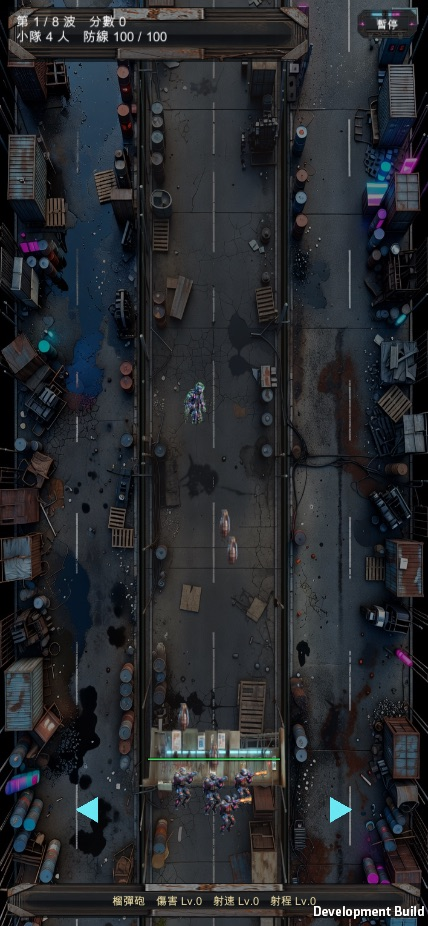
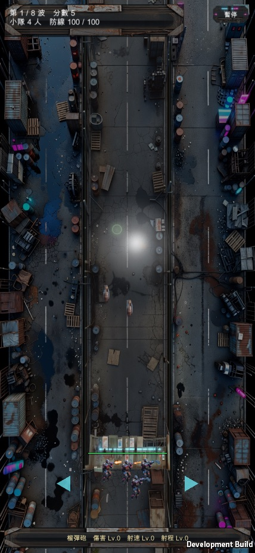

殭屍防線 · 榴彈砲射程診斷
你回報「射程 Lv.0、砲彈拋不遠」，量出來之後發現是兩個問題疊在一起：一個是射程數值真的偏保守，另一個是更根本的——榴彈幾乎每一發都在剛出手的瞬間就自己引爆了，第二個問題不解決，第一個修了也沒用。兩個都已經修好，走真實開火路徑（不是竄改血量或狀態）在 Unity 實機上驗證過。還沒 commit，等你看完這頁再說。


殭屍防線裡有兩種東西會拋物線飛：小隊自己的榴彈砲，跟迫擊砲塔（駐守物之一）。兩者共用同一段「防呆」邏輯——榴彈飛回防線的高度都還沒命中任何東西的話，強制引爆，避免永遠飛在空中。這段邏輯的判斷式很單純：「這一幀的 Y 座標 ≥ 防線 Y」就引爆。
迫擊砲塔是從防線前方發射的，所以它一開始的 Y 座標本來就在防線前方（小於防線 Y），要飛出去繞一圈、真的沒打中任何東西、掉頭飛回防線之後，這個判斷式才會成立——完全合理。
但小隊自己的榴彈砲，是從防線後方發射的（槍手本來就站在防線後面一小段距離）。這代表榴彈一出手，Y 座標就已經大於等於防線 Y 了——不用飛到任何地方，光是第一次物理更新（1/60 秒後）沒吃完那一小段後退的距離，這個「防呆」判斷式就成立，直接在槍口炸開。每一發都這樣，不管射程等級多高、不管有沒有帶瞄準鏡，這條路徑上的每一發榴彈都在自己腳邊爆炸，從來沒有真正飛出去過。
這就是「拋不遠」看起來的樣子——玩家看到的不是「射程短」，是「幾乎沒有拋物線」，因為根本沒等它飛就先炸了。你截圖裡傷害 Lv.5（表示這把武器有在造成傷害、有在升級）但完全打不到中距離以上的目標，兩件事合起來剛好就是這個症狀：近距離貼臉的目標偶爾還是會被直接命中判定（走的是另一條「彈藥飛行路徑上真的掃到殭屍」的碰撞邏輯，不受這個 bug 影響），但只要目標稍微遠一點，榴彈連飛都沒飛出去就沒了。
修法：把「防呆」判斷式改成「這一幀之前 Y 曾經 < 防線 Y，這一幀又回到 ≥ 防線 Y」——也就是真的要求它「先飛到防線前方過」才算數。迫擊砲塔本來出發點就在防線前方，行為完全不受影響；小隊榴彈砲則變成真的要飛出去、繞一圈沒打中才會被這條防呆規則收回來，不會再一出手就自爆。
解決了「會不會飛」之後，還有「飛多遠」的問題。射程 Lv.0、沒有瞄準鏡時：
| 瞄準系統宣稱的射程 | 榴彈修前物理最大射程 | 差距 | |
|---|---|---|---|
| 標準機型（iPhone 14 尺寸） | 346px | ≈178px | 只有一半 |
也就是說，就算先前那個「自爆」問題不存在，槍手鎖定/瞄準的目標距離也是瞄準系統自己宣稱的射程的兩倍——榴彈砲物理上飛得到的距離只有其他武器（例如步槍）同等射程等級下的一半。這個數值從遊戲一開始（連 Expo 原版）就沒被校準過，跟「射程升級／瞄準鏡有沒有效果」是不同的兩個問題——後者半年前就修過一次，但只修對了等級之間的相對縮放比例，沒人回頭檢查過最基準的那個距離本身對不對得上瞄準系統。
修法：不再用一個獨立調的「初速常數」去湊射程，改成跟迫擊砲塔同一套算法——直接照瞄準系統這一發鎖定的射程反推初速該多快（拋物線公式：射程 = 初速² ÷ 重力加速度的兩倍）。這樣無論射程等級升到多高、有沒有帶瞄準鏡，榴彈的物理射程永遠會等於或略大於瞄準系統宣稱的射程，不會再「瞄得到打不到」。
Unity batch mode 出 Mac 版 build，兩輪都 0 個編譯錯誤。走真實開火路徑：小隊真的開火，榴彈真的用遊戲內的拋物線物理飛行，不是直接改殭屍血量或直接呼叫爆炸函式。驗證場景刻意重現你回報的狀況——射程 Lv.0、目標釘在瞄準系統自己宣稱打得到的射程邊界。
過程中踩了一個測試自己的坑：第一輪把目標放上去之後，忘記停掉正常的殭屍生成，20 秒內畫面被刷出一整排殭屍，爆炸全部打在比較近的那些殭屍身上，看起來像「還是沒修好」——後來確認是測試漏了一行「停止刷怪」，不是產品本身的問題，修正測試之後才拿到乾淨的量測數字。
另外用同一套八種武器的既有回歸測試（近距離對 12 隻殭屍）確認榴彈砲在正常近戰距離下沒有被這次改動影響：開火 12 次、擊殺 12 隻、總傷害 475，跟步槍、火箭砲等武器的近戰表現同一個量級，沒有退化。
還沒 commit。兩個修法都還在工作目錄裡，等你看完這頁點頭才會進版本控制。
迫擊砲塔（駐守物）沒有另外拍截圖驗證。它的發射點本來就在防線前方，這次改動的判斷式對它來說「開場條件」沒有改變（原本就滿足、現在還是滿足），照程式邏輯推演不會受影響，但這次沒有另外跑一輪畫面驗證去確認。
只在標準機型比例（iPhone 14 尺寸的視野）量過數字。不同長寬比的機型防線 Y 座標不同，瞄準射程也會跟著變，但兩邊都是用同一條公式算出來的，理論上比例會一起變動，沒有另外拍不同機型的對照。